III 生物演化 · 第1讲
重走达尔文的推理
2课时 ｜ 跟着达尔文的故事，学科学怎样“想”出来
《陈阅增普通生物学》（第5版）七篇：
I. 细胞 ｜ II. 遗传与变异 ｜ III. 生物演化 ｜ IV. 生物多样性的演化 ｜ V. 植物的形态与功能 ｜ VI. 动物的形态与功能 ｜ VII. 生态学与保护生物学
接下来的一个月，我将带领大家学习其中加粗的四篇，今天从第 III 篇开始。
←/→ 键翻页；右上角可切换为可下拉阅读的课后版
研究生入学考试改革：能力考查成为选拔重心
| 试点 | 内容 |
|---|---|
| 考应用 | 「临床医学综合能力（西医）」306 全国统考全面铺开（教育部教研厅〔2025〕2 号），各校自命题改考统考；大纲明确考查“运用所学知识综合分析、解决临床实际问题的应用能力”，而非记忆条文 |
| 考定量 | 北京大学逻辑学、科学技术哲学等专业 2026 研究生入学考试科目三改为数学三，山东大学等高校跟进，定量分析能力正从理工科扩展到人文社科的选拔要求 |
应用型本科：两项核心训练
掌握原理后，熟悉情境可以胜任，陌生情境也能应对。技能会过时，迁移力才持久
从验证性实验走向设计性、探究性项目：自行提出假设、设计方案、检验结论，形成高阶能力
| 数据 | 来源 |
|---|---|
| 分析性思维连续位列雇主最看重的核心技能第一位，约 7/10 的企业视其为 2025 年必备；创造性思维、好奇心等紧随其后 | 世界经济论坛《未来就业报告 2025》，调研全球 1000+ 家雇主 |
| AI 时代企业选才正从“会用工具”转向“能定义问题、做判断”：面对不确定性时的合理归因能力，已成为区分“高潜力人才”的关键 | 前程无忧 51job《2026 校招人才素质白皮书》，基于近五年 800 万人次校招测评数据 |
要点归纳
把技能建立在原理之上，把能力培养落实在探究之中：理解原理，技能过时后仍可快速迁移；掌握探究，面对没有现成答案的问题也知道如何入手。学生版框架速览：四个维度 × 三级进阶
UNESCO 2024 年发布全球首份《学生人工智能能力框架》，采用 4 维度 × 3 级进阶 = 12 项能力的结构。每项分“理解 Understand → 应用 Apply → 创造 Create”三级进阶。四个维度及各级要求：
1. 以人为本的意识：人的主体性 → 人的责任 → 社会责任
2. AI 伦理：伦理原则 → 安全负责地使用 → 共创伦理规则
3. AI 技术与应用：基本知识 → 应用技能 → 用 AI 创造
4. AI 系统设计：理解设计思维 → 设计解决方案 → 创造 AI 应用
与本页两件事两两呼应：① 练原理 ↔ “AI 技术与应用”＋“以人为本的意识”：懂原理才能在工具换代时迁移，理解人与 AI 的关系是价值坐标；② 练探究 ↔ “AI 系统设计”＋“AI 伦理”：前者指向自己提出问题、设计方案、做出东西，后者要求在探究中做负责任的判断（ethics-by-design）。框架的最高进阶是“创造”而非“会用”。
下载：《AI competency framework for students》(2024，英文，80页，PDF)（CC BY-SA 3.0 IGO）
教师版框架速览：五个方面 × 三级进阶
UNESCO 配套发布的《教师 AI 能力框架》（2024，52页）与学生版同步开发，采用 5 方面 × 3 级进阶 = 15 个能力块的结构。三级进阶：习得 Acquire（全体教师必备的基础 AI 素养）→ 深化 Deepen（设计有意义的教学策略，深度融入 AI）→ 创造 Create（创造性配置 AI，开创变革性教学）。
五个方面及各级要求：
1. 以人为本的意识：人的主体性 → 人的责任 → 社会责任
2. AI 伦理：伦理原则 → 安全负责地使用 → 共创伦理规则
3. AI 基础与应用：基本技术与应用 → 应用技能 → 用 AI 创造
4. AI 教学法：AI 辅助教学 → AI 与教学法整合 → AI 增强的教学变革
5. AI 促进专业发展：AI 支持终身学习 → AI 增强组织学习 → AI 支持专业转型
与学生版对照：两版共享"以人为本、伦理、基础与应用"，教师版把学生版的"AI 系统设计"换成了教师的立身之本：教学法与专业发展；进阶终点同为"创造"，但教师版的创造落在教学变革而非技术产品。
下载：《AI competency framework for teachers》(2024，英文，52页，PDF)（CC BY-SA 3.0 IGO）
一个框架统摄全局：布鲁姆认知六层次
| 改革信号 ↓ ／ 层次 → | 记忆 | 理解 | 应用 | 分析 | 评价 | 创造 |
|---|---|---|---|---|---|---|
| 306 西医综合“考应用不考背诵” | · | ● | ||||
| 文科研究生入学考试加数学三 | ● | |||||
| 企业选才“能定义问题、做判断” | ● | ● | ||||
| 验证性实验 → 探究性项目 | · | ● | ● | ● | ||
| UNESCO 框架进阶“理解→应用→创造” | · | · | ● |
从低到高：记忆 → 理解 → 应用 → 分析 → 评价 → 创造；● 落点，· 途经
要点归纳
各项改革指向同一趋势：评价的天平正从布鲁姆金字塔的底端（记忆、理解）移向顶端（分析、评价、创造）。低阶认知正被 AI“外包”，人的价值在高阶区。本课每一站训练的推理，都在逐层向上。最新动态：UNESCO 数字学习周 2026（2026 年 9 月，巴黎）
UNESCO 发布第二届全球高校 AI 使用调查（基于全球 UNESCO 教席网络）：93% 的学者认为学生正在用生成式 AI 完成作业，63% 认为学生的认知能力因此下降；但只有不到 1% 支持完全禁止 AI——主流共识是“特定作业允许使用，或要求声明使用”。同场 25 国教育部长通过《部长联合声明》：教育在 AI 时代仍是人权与公共品，应优先发展与保护学生的批判性理解，选用“促使学生去推理、去完成认知劳动”的 AI，而非替代学生思考的 AI。这与本页结论一致：AI 可以代劳低阶认知，选择与判断始终是人的高阶认知。来源：UNESCO 官网 2026-09-09 新闻稿及《Ministerial Statement》（UNESDOC pf0000399360）。另：2024 版两份 AI 能力框架目前仍为现行版本，UNESCO 将于 2027 年 3 月数字学习周发布后续政策简报。自主探究：五周迭代五个版本，完成一件自己的作品
为什么布置这个作业
综上所述，上述内容指向同一结论：生物学不只有老师讲授的知识点，也有你自己可以提出的问题；学习不只有一种正确的形式，每个人都可以找到自己的表达方式。本课开头的“进化还是演化”，就是教师对感兴趣的问题所作的一次简单探索，接下来由你完成。| 要求 | 说明 |
|---|---|
| 选题 | 教材 P192–391、P524–576，任选一个你感兴趣、希望真正理解的知识点：概念、原理、理论、结构、机制、现象、科学问题、一段历史，或一个引起你兴趣的发现 |
| 内容 | 以你认同的方式解释它：示意图、实例、证据、逻辑链…… |
| 形式（非纯文字） | 要么动手，要么动嘴：手绘、实物制作、讲解视频等均可；可用 AI 生成图片、动画等素材，但必须包含本人亲自讲解的音频或视频：AI 能替你写出流畅的文字、生成精美的画面，却替不了你亲口讲出来的理解 |
| 节奏 | 五周、五次作业、五个版本，逐步深入；本周五 21:59 前提交第一版，雨课堂"试卷"上传照片或作品链接 |
| 评价 | 科学准确（经得起推敲）· 真正理解（并非记忆结论，而是理解透彻）· 探究反思（留存探究过程，包括困惑）· 表达创意（以自己的方式表述清晰） |
评价细则：四维度在"AI 素材＋亲自讲解"与"纯手绘＋音频讲解"两种形式下如何判分
科学准确：若用 AI 生成素材，其中的科学错误同样计入，素材再精美，内容错误即扣分（识别并修正 AI 的错误，本身就是"评价"层的训练）。真正理解：以本人讲解为准，能脱稿、能回应追问，而非朗读讲稿，无论讲稿由谁写成。
探究反思：若用了 AI 工具，用了什么、为何用、生成结果哪里不对、如何修正，也计入反思。
表达创意：创意体现在个人构思与讲解；无论纯手绘还是 AI 素材，素材本身的精美程度不加分。
两种形式评价完全等值：加分点始终在你自己的理解与表达，与素材来源无关。
提示（不必逐条作答，但请在作品中体现）
· 我为什么对它感兴趣？· 我想探究什么？实际做了什么（查文献、观察、推演……）？
· 我发现了什么？遇到了什么困难？还有什么没弄懂？
写在最后
五个版本叠加，你将完整看到自己如何逐步走完从“感兴趣”到“讲清楚”的全过程。这正是本课反复强调的：从证据到结论的推理，和属于你自己的表达。从“进化”到“演化”：一字之差
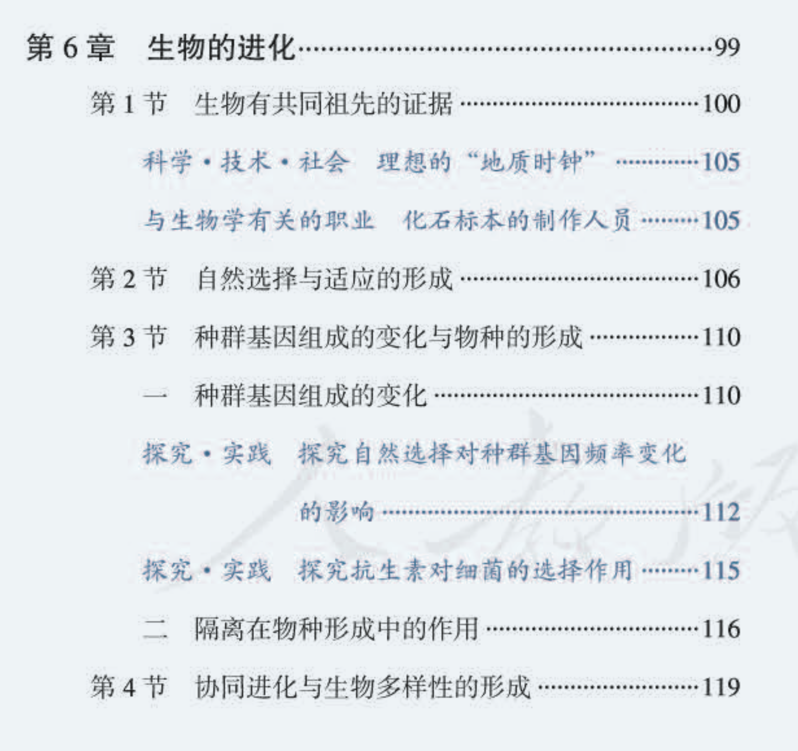
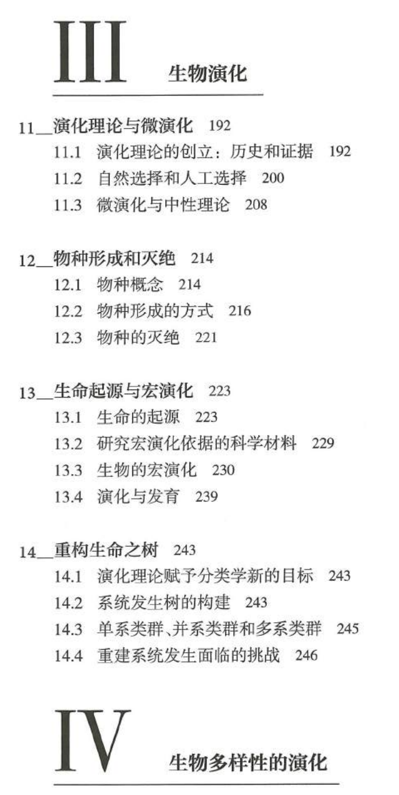
“进化”与“演化”：都是翻译
高中教材的“进化”、大学教材的“演化”，都是对同一个英文词 evolution 的翻译。中文的两个词并非两个概念，差别出在译法上。你更认同哪一种译法？为什么？调查：evolution 从哪里来？
| 时代 | 含义 |
|---|---|
| 拉丁语 ēvolūtiō（ē- “出” + volvere “滚、卷”） | “展开、摊开（书卷）”，引申为逐渐显露 |
| 17–18世纪 | 指胚胎的“预成论”发育：微小成体在卵中预先存在，发育只是“展开” |
| 《人类的由来》(1871) | 达尔文首次正式使用 evolution 一词（第一版） |
| 《物种起源》第六版 (1872) | evolution 才首次出现在《物种起源》中（1859 年第一版他多用 “descent with modification”，有修改的传衍） |
| 同时代的斯宾塞等人 | 把 evolution 推广为普遍的“由简到繁、由低到高”的进步规律，进步色彩即由此引入 |
| 20世纪以来（综合论之后） | 生物学定义为“种群基因频率的代际变化”，无方向、无目的 |
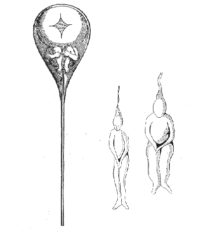
图：Nicolaas Hartsoeker, Essai de dioptrique (1694)
词义随认知而变：学概念不要停留在字面
evolution 从“展开书卷”到胚胎发育，再到今天的生物学定义，含义一直在被人们不断修正。概念学习不应停留于字面，应追问：这个词当时指什么？现在指什么？是什么让它改变了？扩展：达尔文自己怎么叫它
达尔文在笔记本里称这一过程为 “transmutation”（嬗 shàn 变），1859 年《物种起源》第一版的书名和正文都没有用 evolution；1871 年《人类的由来》第一版他首次正式采用这个词，1872 年《物种起源》第六版才随之沿用。为什么超过 1/4 在讲演化？
教材超过 1/4 在讲演化：2/7 篇（28.6%）、11/41 章（26.8%）、160/576 页（27.8%）、本学期 16/56 学时（28.6%）。为什么？
教材的官方回答
“演化理论是生命科学基础的基础。有了它，才能对生物的多样性、适应性和统一性做出完整的合乎逻辑的解释；把纷繁的生物贯穿起来形成系统；把生物学各分支融汇成一个整体，成为统一的生命科学。”这个回答偏抽象，不靠本课讲透：它要在整门课程中逐步展开，在本科四年的学习中反复印证，甚至要到二十年后回望时才能真正体会。穿越：到达尔文的时代去
教材第 192 页：达尔文是演化理论的主要创立者。
接下来，我们穿越到达尔文的时代，亲历演化理论被“想”出来的过程，体验它的推理。
本课主线：五站
1830年代的“常识”
贝格尔号上的观察
鸽子与马尔萨斯
20年的打磨
1858–1859
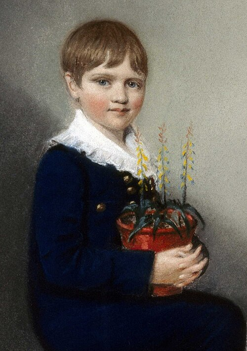
出发之前：达尔文的教育经历
| 时间 | 学校 | 专业／方向 | 学习内容与收获 |
|---|---|---|---|
| 1825–1827 | 爱丁堡大学 | 医学 | 两年后退学：厌恶当时手术无麻醉的血腥场面；随格兰特学习海洋生物分类，学会了标本采集与解剖，首次接触拉马克式演化学说 |
| 1828–1831 | 剑桥大学基督学院 | 神学（原计划当牧师） | 成绩中上；随植物学教授亨斯洛学习博物学，随地质学家塞奇威克参加野外地质考察 |
| 1831–1836 | 贝格尔号（无学位的“社会大学”） | 博物学家 | 环球航行五年：地质、化石、动植物标本的观察与采集，奠定演化理论的全部经验基础 |
请注意这条轨迹
医学没读完，牧师没当成，最“不务正业”的爱好（博物学）最终成了他的事业。促成这一转折的关键人物是谁？“同亨斯洛一起散步的人”
达尔文在剑桥随植物学教授亨斯洛学习博物学，两人几乎每天一起散步，谈植物、昆虫与地质，结成忘年之交，同学们因此称他为“那个同亨斯洛一起散步的人”（the man who walks with Henslow）。达尔文在《自传》中说，亨斯洛对他的影响超过其他所有老师；后来也正是亨斯洛推荐他登上贝格尔号，成为随船博物学家。① 1830年代的三个“常识”
各从其类，一造而成
每个物种被分别创造后固定不变
几千年，没有时间发生变化
生命从哪里来？
当时的主流答案是特创论（creationism）：每个物种由神分别创造、各从其类。
达尔文在两所大学里，恰好接收到它的正反两面：
爱丁堡（医学）：泡在普林尼学会（Plinian Society）这个反自然神学的思想熔炉里，首次听到对特创论的公开质疑；
剑桥（神学）：基督学院要求背诵佩利（William Paley）的论证，精巧的结构说明有设计者。
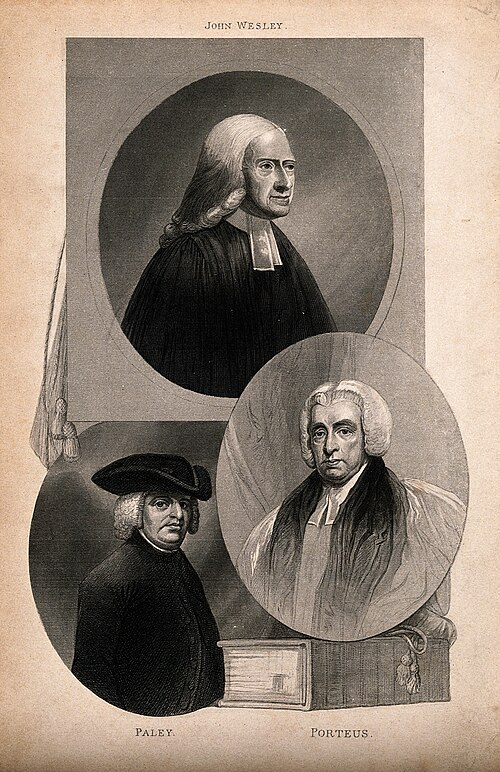
扩展：佩利与赖尔
佩利的“钟表匠”论证是当时对适应最有力的解释：荒野里捡到一块表，必推知有制表人。赖尔《地质学原理》主张今天可见的缓慢过程足以塑造地貌，给了达尔文“深时”这一关键前提，这本书他随船携带。物种不变，正反两方
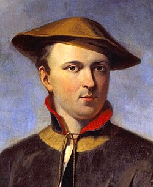
Hendrik Hollander (1853) 临摹自 1737 年原作
正统：林奈。现代分类学之父在《自然系统》（Systema Naturae）中写道：“There are as many species as the Infinite Being produced diverse forms in the beginning.”（物种的数目，与造物主起初所造的各样形态一样多。）分类学的最高权威亲口为物种不变背书。
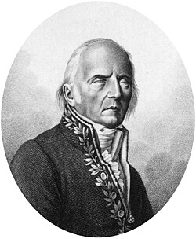
异见：拉马克。1800 年讲演首提演化思想，1809 年《动物学哲学》最早明确区分结构上的深层关系与习性、环境造成的表面相似（variability 与 modification），主张物种本身可以改变。然而缺乏论证，没有广泛传播。
达尔文与拉马克学说
达尔文在爱丁堡随格兰特学习时接触的，正是拉马克式的演化学说：它提出了正确的问题，却没有给出可检验的机制。达尔文后来的工作，正是补上这缺失的论证。地球很年轻？化石说不
按当时通行的圣经年表（厄舍尔主教的推算），创世约在公元前 4004 年：地球只有几千年，没有留给演化足够的时间。
但化石给出了相反的证据：玛丽·安宁（Mary Anning，1799–1847），英国莱姆里吉斯的化石采集者，发现并鉴定了鱼龙（1811）、蛇颈龙（1823）、翼龙（1828）。这些巨大的、早已灭绝的海洋爬行动物接连出土：一个只有几千年的地球，容不下这么多“出现过又消失”的巨大生物。
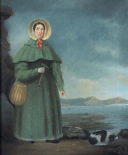
B. J. Donne 水彩（约1842）
扩展：安宁与科学共同体
安宁因性别与阶层无法进入皇家学会等学术机构，其发现常被购买她化石的绅士学者署名发表。她终身未婚、生活拮据，47 岁病逝。直到近年，她才作为“化石猎手”与古生物学奠基者之一被重新评价。另注：鱼龙、蛇颈龙、翼龙都不是恐龙（dinosauria 一词 1842 年才创立），“安宁发现恐龙”是通俗误传。从化石到深时：抵达达尔文的两条路
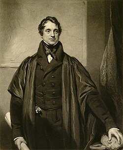
塞奇威克。剑桥地质学家，曾从安宁处购买化石用于研究。
达尔文在爱丁堡读医时听地质课，觉得枯燥至极；1831 年夏随塞奇威克在威尔士做野外考察，却自感“学了非常多，并发展出强烈兴趣”。
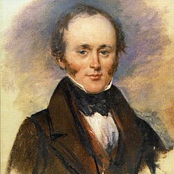
Alexander Craig 绘
赖尔。《地质学原理》（第 1 卷，1830 年 1 月）主张均变论，把地球史拉长到百万年量级的“深时”，其论证正依赖安宁等人提供的化石记录。
带着野外考察激发的兴趣，达尔文随身携带第 1 卷登上贝格尔号（1831 年 12 月），航行中陆续收到第 2、3 卷，用均变论解释南美地层与珊瑚礁。
此时的达尔文是什么样的人
请记住这个出发点的达尔文：他刚拿到神学学位，航行期间自称“十分正统”的国教信徒，甚至被船上军官当作“随船的基督徒”。他不仅虔信特创论，还在航行中主动用“创造中心”（centres of creation）解释物种的地理分布；爱丁堡时听过的拉马克式学说，他自述“听了一无触动”。动摇发生在航行后段：加拉帕戈斯的观察之后，他开始怀疑物种并非固定不变。推翻“年轻地球”与“物种不变”的，正是这个虔诚信徒自己，被自己的观察一步步推着走。史料出处：达尔文《自传》（1876 年撰，载 F. Darwin 编 The Autobiography of Charles Darwin, 1887）中“准备当牧师”与“贝格尔号航行”各节（含“我毫不怀疑圣经每字每句的严格字面真实”一语）；“创造中心”见《贝格尔号之旅》（Journal of Researches, 1839）关于加拉帕戈斯的论述；综述见 Wikipedia: Religious views of Charles Darwin。
深时为什么关键
哪怕极缓慢的变化，乘以百万年也能积累成巨大的不同。没有深时，任何渐变的演化机制都无法成立；有了深时，缓慢的自然选择才可能有今天所见的效果。达尔文在《物种起源》里专门讨论了地质记录的不完整性，并援引赖尔估计地球的古老程度。贝格尔号的航线（1831–1836）
1831 年 12 月自英国德文波特启航，先向南美东岸，绕过合恩角后再沿西岸北上，赴加拉帕戈斯，横渡太平洋经塔希提、新西兰、澳大利亚，绕好望角，1836 年 10 月返抵英国；全程约五年。
这张图怎么看
红线为航线，深色段落为达尔文登岸做内陆考察的路程。请留意三处关键坐标：①潘帕斯地层（大地懒与犰狳化石）；②加拉帕戈斯群岛（岛屿间差异）；③南美大陆自北向南的物种替代（美洲鸵）。下一页的三组观察，全部发生在这条线上。观察与记录
船上制标本：盐渍、砷皂防腐、逐件编号、贴标签、写采集地
标本分批寄回，入藏动物学会等机构，构成可查证的国家收藏
按类群寄给各领域专家：古尔德认雀类、欧文认化石，鉴定结果才具权威
《贝格尔号动物学》(1838–1843) 出版商组织雕版师据标本绘图出版，观察成为公共知识
相机时间线：1826–1827 尼埃普斯第一张照片（不可实用）→ 1831–1836 航行期间照相术尚未实用化 → 1839 达盖尔银版法公布 → 1851 湿版法方可用于科学记录
相机时间线
| 年代 | 影像技术 | 达尔文在哪里 |
|---|---|---|
| 1826–1827 | 尼埃普斯拍出第一张照片（曝光约 8 小时，尚不可实用） | 剑桥读神学 |
| 1831–1836 | 照相术未实用化，无法带相机上船 | 贝格尔号航行，全程靠标本、文字与手绘 |
| 1839 | 达盖尔银版法公布，摄影术诞生 | 刚回国两年，正整理标本与笔记 |
| 1851 | 火棉胶湿版法，摄影开始可用于科学记录 | 已在研究藤壶 |
| 1888 | 柯达手持相机问世（“你按快门，其余我们做”），记录工具平民化 | 《物种起源》出版已 29 年；达尔文处于晚年荣誉顶峰，1882 年已逝世 |
没有相机的年代，证据靠什么保证可靠
达盖尔银版法 1839 年才公布，贝格尔号起航时照相术尚未实用化，达尔文全程只能靠标本与文字、手绘记录。科学的可靠性不靠影像，而靠编号与标签、多点收藏、独立专家鉴定。这与今天“AI 可生成以假乱真图像”的时代是同一个问题：证据的可信度来自程序，不来自画面。标本至今还在
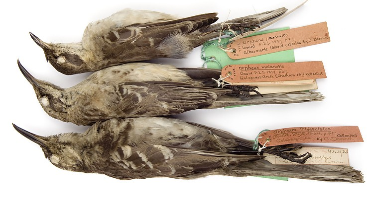
达尔文 1835 年亲手采集的嘲鸫模式标本，现藏伦敦自然史博物馆；正是各岛嘲鸫的差异最先动摇了“物种不变”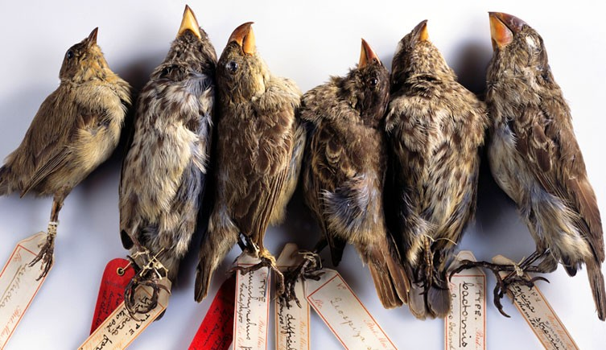
达尔文采集的雀类标本；回国后古尔德才确认它们是亲缘相近的一群，达尔文当初误记为不同科的鸟图片来源：The Trustees of The Natural History Museum, London（贝格尔号鸟类皮张收藏页）
这批标本后来的命运
达尔文共采集近 500 号鸟类皮张，交由伦敦动物学会博物馆，古尔德据此描述了 39 个新种及亚种。1855 年该博物馆藏品散售，大英博物馆购入大部分模式标本；经多年回溯，自然史博物馆现存达尔文贝格尔号鸟类近 200 号，另有近一半标本至今下落不明——180 多年前的标签与编号，仍是今天追踪它们的唯一线索。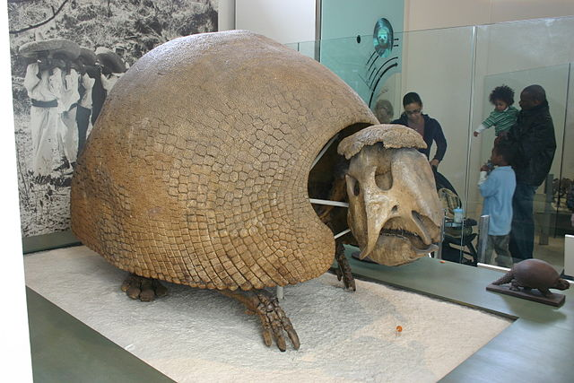
雕齿兽化石：Ryan Somma，CC BY-SA 2.0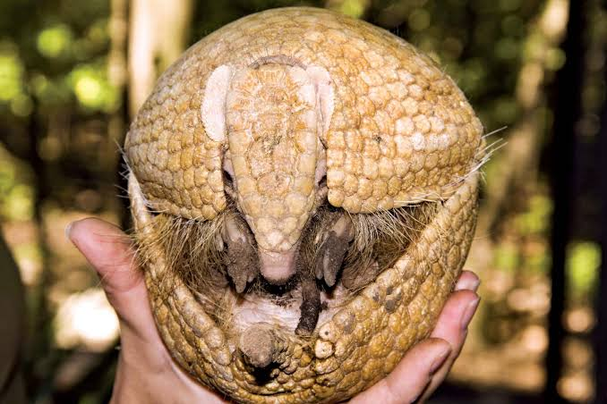
现生犰狳潘帕斯地层中的雕齿兽（1839 年由欧文命名），与阿根廷今天的犰狳有着特殊的相似性这些标本后来分寄古生物学家欧文、鸟类学家古尔德等专家鉴定，各自成为一类证据。
欧文其人
理查德·欧文（Sir Richard Owen，1804–1892）在 1839 年命名雕齿兽模式种 Glyptodon clavipes；1842 年创造了 dinosaur（恐龙）一词；1843 年定义了 homologue（同源）与 analogue（同功）两个比较解剖学核心概念——后两者正是演化生物学至今仍在使用的基本工具。扩展：一个诚实的细节
达尔文起初没有把雀类按岛屿分别标记，回国后请古尔德鉴定才发现它们是亲缘相近的不同种，他不得不向同船者索取标本记录。好的观察需要事后回溯的数据。专家的反馈：观察变成证据
相似的物种在空间上相邻分布、在时间上前后相接——这不是偶然。
1837：“我想”与一个缺口
回国后，他在笔记本里画下第一棵分支的生命树，写道“I think”：物种可能由共同祖先分化而来。
尚缺一环：变化如何发生？为何恰好适应环境？拉马克的“用进废退”解释不了这些适应。
③ 向养鸽人学习：人工选择
家鸽品种差异极大，却都来自岩鸽。育种者只做两件事：挑选想要的个体繁殖，代代积累。
启示：变异是现成的，选择加上时间就能造出明显的差别。自然界里，由谁来“挑选”？
扩展：为什么是鸽子
达尔文亲自养鸽、加入养鸽俱乐部，并解剖比较骨骼。他选择身边可控、可重复的材料，把“类比”落到实证上。1838：马尔萨斯
读到《人口论》：人口若不受限制会几何增长，食物只能算术增长，所以必有竞争。
达尔文把它推广到全部生物：出生的后代远多于能存活的，“挑选者”就是生存斗争本身。
自然选择：一个可检验的推理
| 前提 | 依据 |
|---|---|
| ① 个体产生的后代远多于能存活的 | 马尔萨斯；鸟窝、种子数 |
| ② 个体之间存在变异 | 观察；养鸽人 |
| ③ 部分变异可遗传 | 育种实践 |
| 结论 | 某些变异使个体更易存活繁殖，其特征在种群中累积，缓慢产生适应与新种 |
④ 20年的打磨
花8年研究藤壶，亲自理解“变异”与“物种”
种子泡海水后能否发芽，检验“远渡重洋”的分布解释
写信向育种者、园艺师、博物学家索取资料
眼的复杂性、中间型缺失、化石记录不完整、遗传机制不明
扩展：为何延迟二十年
1842年已有提纲，1844年写出长稿。他预见到理论会引起巨大争议，所以要先把反对意见想在前面。⑤ 1858–1859
| 时间 | 事件 |
|---|---|
| 1858年6月 | 收到华莱士来信，其独立想出的理论与自己几乎一致 |
| 1858年7月 | 林奈学会联合宣读两人论文 |
| 1859年11月 | 《物种起源》出版，首印当天售罄 |
回顾：科学推理的“拼图”
| 阶段 | 推理类型 | 可迁移的方法 |
|---|---|---|
| 航行 | 观察 → 归纳 | 先找模式，再问为什么 |
| 1837 | 提出假说 | 假说要同时解释多类现象 |
| 鸽子 | 类比 | 从可控系统推到不可见过程 |
| 马尔萨斯 | 跨领域迁移 | 补上机制的缺口 |
| 推理 | 演绎 | 前提明确，结论才可检验 |
| 20年 | 检验与自我反驳 | 先攻击自己的理论 |
课后思考与预告
扩展阅读
《物种起源》第1章（变异）、第3章（生存斗争）、第4章（自然选择）；【待补：参考文献与链接】图片来源
本课件人物画像与历史插图（达尔文 1816 粉笔画、佩利、林奈、拉马克、赖尔、安宁、塞奇威克、Hartsoeker 预成论插图）均取自 Wikimedia Commons，具体条目见各页图注；高中与大学教材书影为教学评述目的截取自相应教材。下次课：【待填】